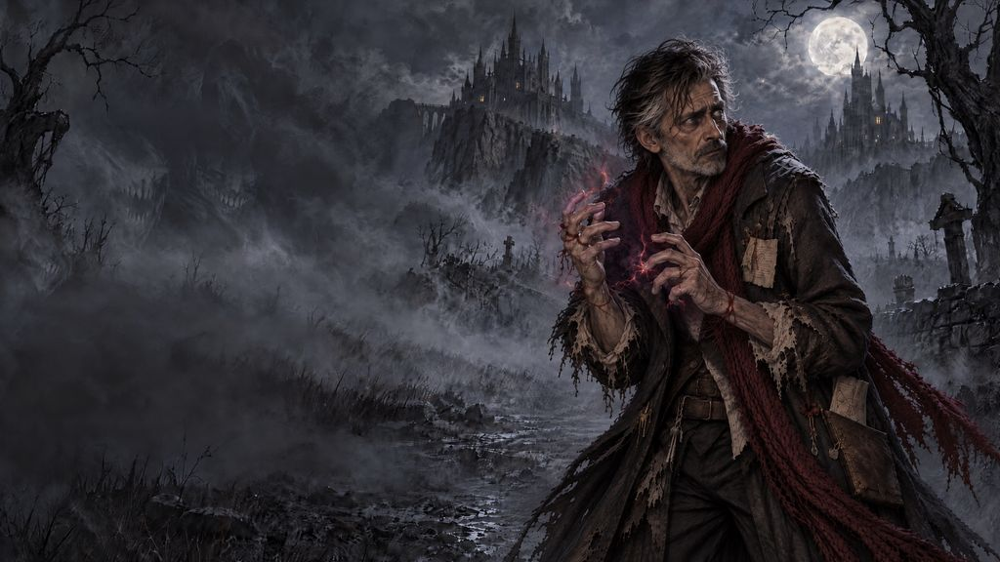
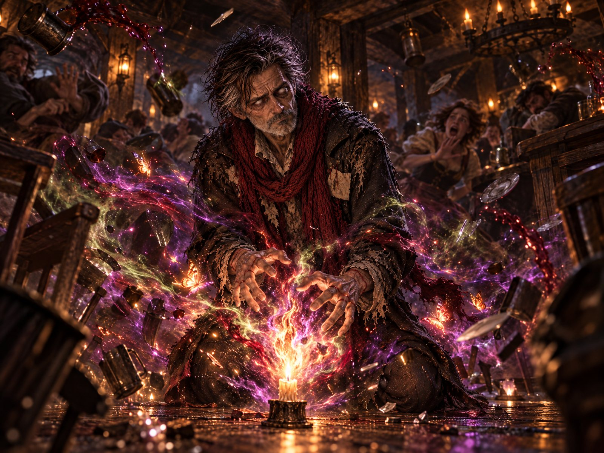

Моет руки
Увидев воду, моет руки и лицо. Не спеша и очень тщательно, как лекарь перед работой. Даже если руки и так чистые.
«Руки должны быть чистыми. Всегда».

Таверна, поздний вечер
Сидит спиной к стене, лицом к двери, с кружкой эля. Вежливый, приветливый, охотно поддержит разговор. Только иногда замолкает посреди фразы и прислушивается, хотя в зале никто ничего не сказал.
Это видит любой, кто зашёл в таверну. Больше пока ничего.

Если посидеть в таверне подольше, увидишь его странности.
Увидев воду, моет руки и лицо. Не спеша и очень тщательно, как лекарь перед работой. Даже если руки и так чистые.
«Руки должны быть чистыми. Всегда».

Перед тем как подняться в комнату, читает тетрадь при свече. Шевелит губами. Иногда улыбается, иногда плачет.
«Не сейчас. Ещё одно, последнее».

Иногда замирает посреди фразы и слушает тишину. Потом виновато улыбается и продолжает как ни в чём не бывало. А когда он расстроен, рядом сами собой вспыхивают свечи.
«Вы слышали? Кто-то смеётся».
Говорит охотно, но о прошлом немногословен. Что дальше, узнаете у него самого, когда он вам доверится.
Трактирщик и завсегдатаи. Правда ли это, решайте сами.
«Пьёт эль, как все, платит серебром. Только руки моет, как лекарь, всякий раз, как увидит воду. Спросишь зачем, удивляется».
трактирщик
«Вчера чихнул у камина, и свечи на всех столах вспыхнули разом. Бороду мою до сих пор жалко».
старик у огня
«Ночью у него в комнате голос. Стихи читает, тихо так. А потом вдруг замолчит, будто его кто-то перебил».
служанка
«Каждого, кто с книгами, спрашивает про одно заклинание. Про забвение какое-то».
заезжий писарь
«Добрый он. Говорят, в соседнем селе полез в прорубь за чужой собакой, сам чуть не утонул. А вчера тут пел, да так красиво, что все замолчали».
конюх
«Назвали его слабаком в шутку. Он побелел весь. Я думала, сейчас ударит, а он ушёл мыть руки».
жена трактирщика
Говорят, к нему понемногу возвращается память. С каждым новым уровнем в его тетради появляется страница, исписанная его почерком. Пароль к ней вы услышите за столом.

«Возьмите меня с собой. Я не буду обузой. И песни знаю. Много песен».
На главную · Персонаж для кампании «Проклятие Страда». Игрок: Алексей.